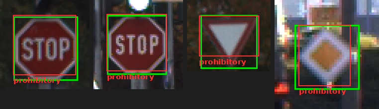
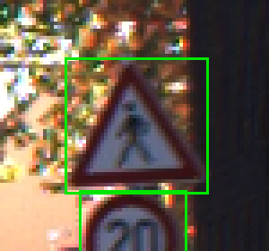
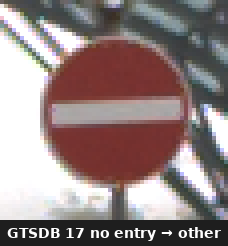

Ứng dụng 6-Rules Engine · Thực nghiệm Bài nộp Annotator · Tối ưu Hóa Quy chuẩn
Thu thập dữ liệu chỉ chiếm 20% thời gian, nhưng 80% công sức và chi phí nằm ở khâu gán nhãn và kiểm duyệt. Soi mắt thủ công thường bỏ lọt 3 lỗi chí mạng:
Thấy biển hình tròn đỏ (STOP, No Entry) là gán ngay thành prohibitory (Cấm), trong khi chuẩn quốc tế GTSDB bắt buộc là other.
Box bị thụt mất 50% diện tích hoặc gom 2-3 biển xếp chồng vào chung một box to (vi phạm nghiêm trọng nguyên tắc Atomic).
CVAT cho phép bỏ trống sign_class hoặc tự gán nhãn mặc định đầu tiên mà labeler không hề hay biết hay kiểm tra lại.
⚠️ Hậu quả thực tế: Kiểm duyệt bằng mắt tốn 10–15 phút/ảnh nhưng vẫn sót lỗi. Đưa dữ liệu bẩn vào huấn luyện sẽ làm lệch pha mô hình AI xe tự lái, gây nguy cơ tai nạn nghiêm trọng.
Chuyển hóa 100% quy chuẩn nghiệp vụ thành luật toán học kiểm định tự động trong 0.2 giây:
Tính diện tích giao trên hợp pixel (IoU). Tự động cảnh báo box bị thụt (quá nhỏ) hoặc vẽ tràn viền.
So khớp 4 nhóm nhãn chính: prohibitory, danger, mandatory, other.
Bắt buộc có sign_class, chuẩn hóa readable (yes/no/uncertain), kiểm tra cờ occluded.
Quét tọa độ không gian; cảnh báo đỏ nếu 1 box của user bao trùm ≥ 2 biển của Ground Truth.
Từ điển thông minh tóm gọn các ca dễ nhầm: STOP (#14), Give Way (#13), No Entry (#17) ➔ buộc gán nhãn other, nếu chọn prohibitory/danger hệ thống sẽ phạt lỗi kèm trích dẫn nguyên văn Guideline.
Kiểm định bài nộp thật của Annotator Nguyễn Hữu Dũng trên 3 ảnh Golden Set (12 đối tượng biển báo):
Điểm Tổng Kết
0.0%
❌ KẾT LUẬN: FAILĐạt Chuẩn (Pass)
0 / 12
0% Golden FitVi Phạm (Fail)
12 / 12
100% Cần Sửa| Nhóm Nhãn (Class) | Precision (Độ chuẩn xác) | Recall (Độ bao phủ) | Nhận Xét Kỹ Thuật Tự Động |
|---|---|---|---|
| 🔴 Prohibitory (Cấm) | 75.0% | 100.0% | Dán tất cả mọi biển thành Cấm (bao gồm cả STOP, Give Way & No Entry). |
| ⚪ Other (Khác) | 0.0% | 0.0% | Bỏ lọt hoàn toàn nhóm 'other' do dính Bẫy Ánh Xạ GTSDB. |
🎯 Attribute Completion Rate: 80.0% (Annotator có tick các ô checkbox, nhưng bỏ trống 100% trường sign_class).
Gatekeeper bắt trọn 3 lỗi điển hình phản ánh trực tiếp bất cập của công cụ và Guideline:

Biển STOP (#14) & No Entry (#17) là hình tròn đỏ nên annotator chọn ngay prohibitory. Theo GTSDB bắt buộc là other!

Tại Object #2: Kích thước GT chuẩn là 71 x 22 px, bài nộp chỉ vẽ 35 x 11 px (thụt mất 50% kích thước thật). Gatekeeper phát hiện ngay!

Toàn bộ 12/12 object đều có sign_class = "" do CVAT để dạng text tự do, annotator không điền và công cụ không có validation bắt buộc!
Đúc kết 20 Issues thực tế từ bài làm của Annotator Dũng để nâng cấp tiêu chuẩn:
prohibitory ➔ Labeler lười đổi nhãn.sign_class gõ tay tự do ➔ Thường xuyên bị bỏ trống hoặc sai chính tả.sign_class thành danh mục chọn 43 mã chuẩn.💡 Triết lý thiết kế Guideline V2: "Một Guideline xuất sắc không phải là viết cho thật dài, mà là thiết kế sao cho Annotator KHÔNG THỂ LÀM SAI!"
Lộ trình tích hợp toàn diện từ Rule-based Engine tới Trí tuệ Nhân tạo:
Tự động đọc JSON kết quả từ Gatekeeper, biên dịch các lỗi kỹ thuật khô khan thành báo cáo ngôn ngữ tự nhiên và gửi email đào tạo lại cho từng Labeler.
Tự động trộn ngầm 5–10% ảnh có đáp án chuẩn vào các batch dán nhãn thường trên CVAT để xếp hạng KPI nhân sự khách quan theo thời gian thực.
Bảng điều khiển Full-stack (FastAPI + Next.js) kết nối trực tiếp kho dữ liệu, cho phép kiểm duyệt hàng ngàn dataset chỉ với 1 cú click.
Q&A · Nhóm sẵn sàng lắng nghe câu hỏi từ Thầy và các bạn